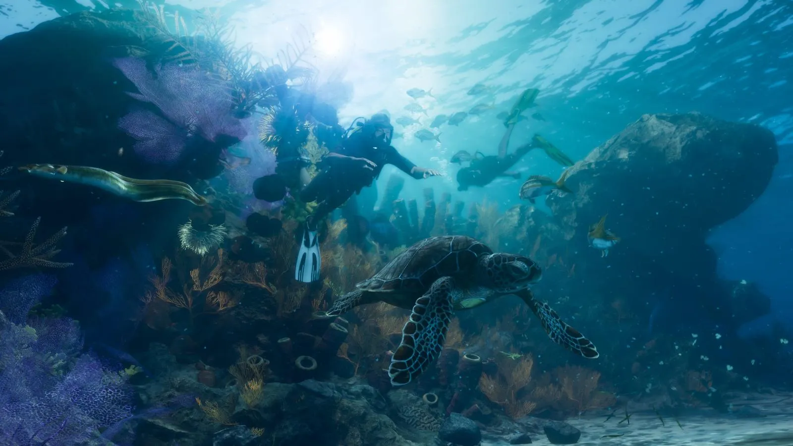

Пилот Пит (Pilot Pete) в GTA 6: все задания и прохождение
Опубликовано:

- 5 заданий в цепочке — ниже каждое по шагам.
- Цепочка засчитывается в трофей Strangers & Freaks.
С Питом Джейсон познакомился ещё в главе 1 — в миссии Clear Skies прикрывал его самолёт от радаров. В главе 4 Пит передаёт дело: пять рейсов со сбросом посылок с воздуха. Это одна из самых денежных цепочек — $92 000 за пять заданий.
У Push Square три последних рейса названы Hostile Takeover, Stormy Weather и Over and Out; у PowerPyx — по месту старта. Какой рейс как называется, источники пока не сводят — ниже по PowerPyx.
Все задания
| Задание | Где и когда |
|---|---|
| Passing the Torch | Глава 4 |
| Backseat Pilot | Глава 4 |
| Southpoint Airfield | Глава 4 |
| Avery Allen & Co. | Глава 4 |
| Deliver Packages | Глава 4 |
Passing the Torch
- В ангаре через красную дверь пройдите в подсобку. Возьмите со стола автомат Pete’s KZ-59.
- Откройте сейф кодом 3718 и заберите содержимое.
- Садитесь в самолёт Пита.
- Пролетите над тремя точками и сбросьте посылки — ✕ (A), как с гидропланом в главе 1.
- Сядьте на полосе к югу от Port Gellhorn, оставьте самолёт у ангара — деньги придут сразу.
Backseat Pilot
- Долетите до поставщика и сядьте на воду рядом с ним.
- Сбросьте посылки на всех 7 точках.
- Верните гидроплан в ангар.
- На всё — 2 игровых часа. Не отвлекайтесь.
- Облетайте большие красные круги: внутри дают розыск и теряется время.
Southpoint Airfield
- Сядьте на поле у поставщика и быстро хватайте сумку — с врагами можно не драться.
- Взлетайте и доставьте 7 посылок до 20:00.
- Этот рейс и Avery Allen & Co. открываются вместе — порядок любой.
Avery Allen & Co.
- Старт — на полосе в Kelly County. Сядьте на воду у поставщика.
- Доставьте 7 посылок до 14:00, облетая красные круги.
Deliver Packages
- Пит напишет через пару дней после двух прошлых рейсов.
- Сядьте в поле у поставщика и доставьте 7 посылок до 08:00.
- После этого рейса цепочка Пита закрыта.
Частые вопросы
Какой код сейфа у Пилота Пита?
3718 — в подсобке ангара на Sundown Private Airfield.
Сколько платит Пилот Пит?
$12 000 за первый рейс и по $20 000 за четыре следующих — всего $92 000.
Источники: PowerPyx — «The Last Mile: Passing the Torch», «The Last Mile: Backseat Pilot», «Pete’s Deliveries (Southpoint Airfield, Avery Allen & Co.)», 19.11.2026. Кнопки — для PS5, в скобках — Xbox. Названия — как в английской версии игры.